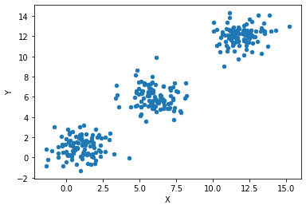
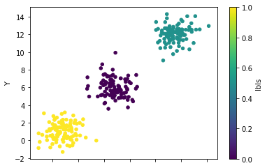
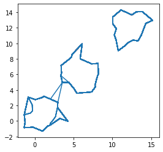

This page was generated from docsrc/notebooks/adbscan_toy_demo.ipynb.
Interactive online version:

[3]:
%matplotlib inline
import pandas
import geopandas
import numpy as np
import matplotlib.pyplot as plt
import sys
from esda.adbscan import ADBSCAN, get_cluster_boundary, remap_lbls
Set up three clusters
[4]:
n = 100
np.random.seed(12345)
c1 = np.random.normal(1, 1, (n, 2))
c2 = np.random.normal(6, 1, (n, 2))
c3 = np.random.normal(12, 1, (n, 2))
db = pandas.concat(map(pandas.DataFrame,
[c1, c2, c3])
).rename(columns={0: "X", 1: "Y"})\
.reset_index()\
.drop("index", axis=1)
db.plot.scatter("X", "Y")
[4]:
<matplotlib.axes._subplots.AxesSubplot at 0x7fe6a27c3e50>

Run A-DBSCAN
[5]:
ms = int(n/10)
print(f"Min. samples: {ms}")
ad = ADBSCAN(2.5, ms, reps=100, keep_solus=True)
np.random.seed(1234)
ad.fit(db)
solus_rl = remap_lbls(ad.solus, db)
ls = list(map(int, ad.labels_))
ls = pandas.Series(ls) / max(ls)
print(ad.votes["lbls"].unique())
db.assign(lbls=ls).plot.scatter("X", "Y", c="lbls", cmap="viridis")
Min. samples: 10
['2' '0' '1']
[5]:
<matplotlib.axes._subplots.AxesSubplot at 0x7fe69adaad10>

Create boundary of clusters
[6]:
polys = get_cluster_boundary(ad.votes["lbls"], db)
[7]:
ax = polys.plot(color='0.5')
db.assign(lbls=ls).plot.scatter("X",
"Y",
c="lbls",
cmap="viridis",
s=2,
ax=ax
)
[7]:
<matplotlib.axes._subplots.AxesSubplot at 0x7fe695e82410>

Explore boundary stability
[8]:
%%time
lines = []
for rep in solus_rl:
line = get_cluster_boundary(solus_rl[rep],
db,
n_jobs=-1
)
line = line.boundary
line = line.reset_index()\
.rename(columns={0: "geometry",
"index": "cluster_id"}
)\
.assign(rep=rep)
lines.append(line)
lines = pandas.concat(lines)
lines = geopandas.GeoDataFrame(lines)
IllegalArgumentException: Operation not supported by GeometryCollection
---------------------------------------------------------------------------
ValueError Traceback (most recent call last)
<timed exec> in <module>
~/anaconda3/envs/analytical/lib/python3.7/site-packages/geopandas/base.py in boundary(self)
210 """Returns a ``GeoSeries`` of lower dimensional objects representing
211 each geometries's set-theoretic `boundary`."""
--> 212 return _delegate_property("boundary", self)
213
214 @property
~/anaconda3/envs/analytical/lib/python3.7/site-packages/geopandas/base.py in _delegate_property(op, this)
77 # type: (str, GeoSeries) -> GeoSeries/Series
78 a_this = GeometryArray(this.geometry.values)
---> 79 data = getattr(a_this, op)
80 if isinstance(data, GeometryArray):
81 from .geoseries import GeoSeries
~/anaconda3/envs/analytical/lib/python3.7/site-packages/geopandas/array.py in boundary(self)
540 @property
541 def boundary(self):
--> 542 return _unary_geo("boundary", self)
543
544 @property
~/anaconda3/envs/analytical/lib/python3.7/site-packages/geopandas/array.py in _unary_geo(op, left, *args, **kwargs)
384 # ensure 1D output, see note above
385 data = np.empty(len(left), dtype=object)
--> 386 data[:] = [getattr(geom, op, None) for geom in left.data]
387 return GeometryArray(data)
388
~/anaconda3/envs/analytical/lib/python3.7/site-packages/geopandas/array.py in <listcomp>(.0)
384 # ensure 1D output, see note above
385 data = np.empty(len(left), dtype=object)
--> 386 data[:] = [getattr(geom, op, None) for geom in left.data]
387 return GeometryArray(data)
388
~/anaconda3/envs/analytical/lib/python3.7/site-packages/shapely/geometry/base.py in boundary(self)
462 collection.
463 """
--> 464 return geom_factory(self.impl['boundary'](self))
465
466 @property
~/anaconda3/envs/analytical/lib/python3.7/site-packages/shapely/geometry/base.py in geom_factory(g, parent)
74 # Abstract geometry factory for use with topological methods below
75 if not g:
---> 76 raise ValueError("No Shapely geometry can be created from null value")
77 ob = BaseGeometry()
78 geom_type = geometry_type_name(g)
ValueError: No Shapely geometry can be created from null value
[7]:
lines.plot()
[7]:
<matplotlib.axes._subplots.AxesSubplot at 0x7f92c28aa3d0>

Interactive widget to explore different solutions across replications
[9]:
from ipywidgets import interact, IntSlider
[10]:
def plot_rep(rep):
f, ax = plt.subplots(1, figsize=(9, 9))
ax.set_facecolor("k")
# Background points
db[["X", "Y"]].plot.scatter("X", "Y", ax=ax, color="0.25", s=0.5)
# Boundaries
cs = lines.query(f"rep == 'rep-{str(rep).zfill(3)}'")
cs.plot(ax=ax, color="red")
# Cluster IDs
for s, row in cs.iterrows():
ax.text(row.geometry.centroid.x,
row.geometry.centroid.y,
s,
size=20,
c="w"
)
return None
reps = range(len(lines["rep"].unique()))
slider = IntSlider(min=min(reps), max=max(reps), step=1)
interact(plot_rep, rep=slider);
---------------------------------------------------------------------------
TypeError Traceback (most recent call last)
<ipython-input-10-9a5f9efadf11> in <module>
16 )
17 return None
---> 18 reps = range(len(lines["rep"].unique()))
19 slider = IntSlider(min=min(reps), max=max(reps), step=1)
20 interact(plot_rep, rep=slider);
TypeError: list indices must be integers or slices, not str
[ ]: